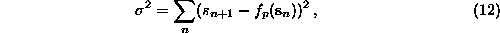
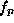
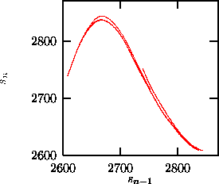

The local linear fits are very flexible, but can go wrong on parts of the
phase space where the points do not span the available space dimensions and
where the inverse of the matrix involved in the solution of the minimization
does not exist. Moreover, very often a large set of different linear maps is
unsatisfying. Therefore many authors suggested to fit global nonlinear
functions to the data, i.e. to solve

where  is now a nonlinear function in closed form with parameters p,
with respect to which the minimization is done. Polynomials, radial basis
functions, neural nets, orthogonal polynomials, and many other approaches have
been used for this purpose. The results depend on how far the chosen ansatz
is suited to model the unknown nonlinear function, and on how well the
data are deterministic at all. We included the routines rbf and polynom
in the TISEAN package, where is modeled by radial basis
functions [54, 55] and polynomials [56],
respectively. The advantage of these two models is that the parameters p
occur linearly in the function f and can thus be determined by simple linear algebra, and the solution is unique. Both features are lost for
models where the parameters enter nonlinearly.
In order to make global nonlinear predictions, one has to supply the embedding
dimension and time delay as usual. Further, for polynom the order of the
polynomial has to be given. The program returns the coefficients of the model.
In rbf one has to specify the number of basis functions to be distributed
on the data. The width of the radial basis functions (Lorentzians in our
program) is another parameter, but since the minimization is so fast, the
program runs many trial values and returns parameters for the
best. Figure  shows the result of a fit to the CO
shows the result of a fit to the CO laser time series (Fig.
laser time series (Fig.  ) with radial basis functions.
) with radial basis functions.

Figure: Attractor obtained by iterating the model that has been obtained by a fit with 40 radial basis functions in two dimensions to the time series shown in Fig.. Compare also Fig.
If global models are desired in order to infer the structure and properties of the underlying system, they should be tested by iterating them. The prediction errors, although small in size, could be systematic and thus repel the iterated trajectory from the range where the original data are located. It can be useful to study a dependence of the size or the sign of the prediction errors on the position in the embedding space, since systematic errors can be reduced by a different model. Global models are attractive because they yield closed expressions for the full dynamics. One must not forget, however, that these models describe the observed process only in regions of the space which have been visited by the data. Outside this area, the shape of the model depends exclusively on the chosen ansatz. In particular, polynomials diverge outside the range of the data and hence can be unstable under iteration.